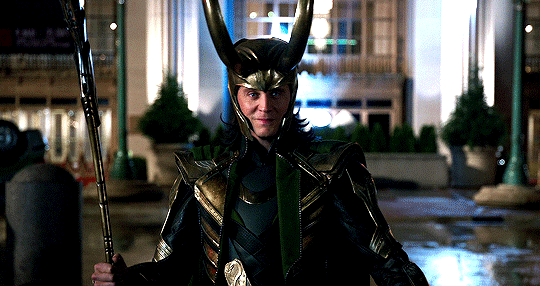
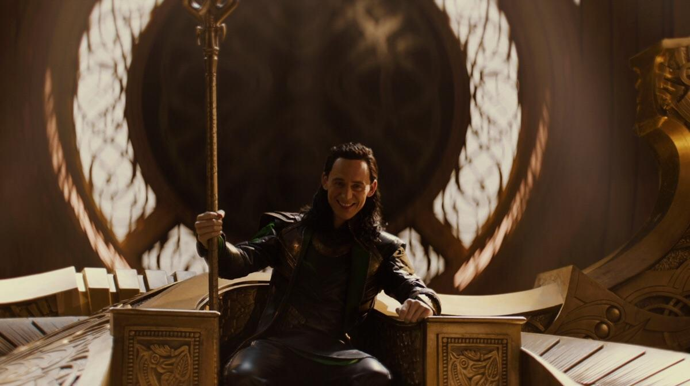
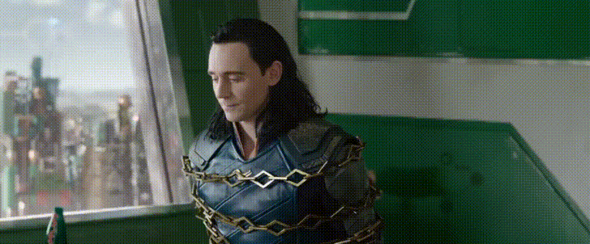
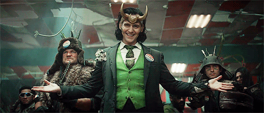

1. The Invasion of New York (The Avengers - 2012)
Loki's first major appearance in the MCU was as the primary antagonist in "The Avengers." In an attempt to subjugate Earth, Loki led a Chitauri invasion, showcasing his power and strategic brilliance. This moment not only established him as a formidable adversary but also laid the groundwork for his ongoing character arc.
2. The Revelation of His True Parentage (Thor: The Dark World - 2013)
In "Thor: The Dark World," Loki's true parentage is revealed. He discovers that he is not the biological son of Odin, but rather a Frost Giant, adopted by Odin after the events of "Thor" (2011). This revelation adds a layer of complexity to Loki's character, explaining his feelings of inadequacy and fueling his desire for power and acceptance.
3. The Sacrifice in "Thor: The Dark World" (2013)

Despite his mischievous nature, Loki experiences a transformative moment in "Thor: The Dark World" when he sacrifices himself to save Thor. This act of heroism marks a turning point in Loki's character, hinting at his capacity for change and redemption. However, the true extent of his transformation remains ambiguous at this stage.
4. Imprisonment and Alliance in "Thor: Ragnarok" (2017)
"Thor: Ragnarok" takes Loki to new depths as he faces the consequences of his past actions. Imprisoned on Sakaar, Loki ultimately forms an uneasy alliance with Thor to save Asgard from destruction. This chapter in Loki's story showcases his internal struggles, oscillating between self-interest and familial loyalty, setting the stage for further character development.
5. Time Variance Authority (Loki - Disney+ Series)
The "Loki" Disney+ series delves deeper into Loki's character, exploring his journey after the events of "Avengers: Endgame." Captured by the Time Variance Authority (TVA) for violating the timeline, Loki is confronted with his own vulnerabilities and insecurities. This series provides a platform for Loki's introspection, offering glimpses of his potential for growth and self-discovery.